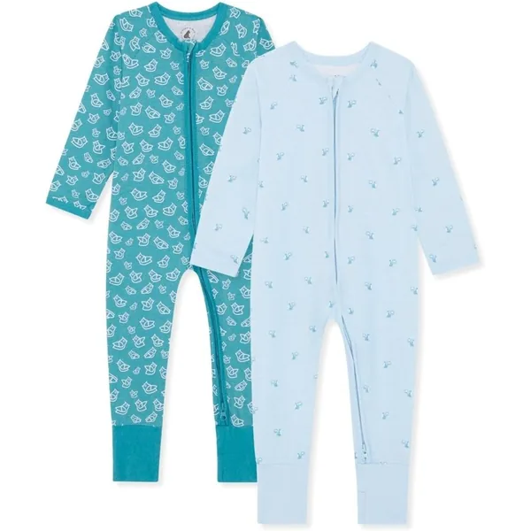
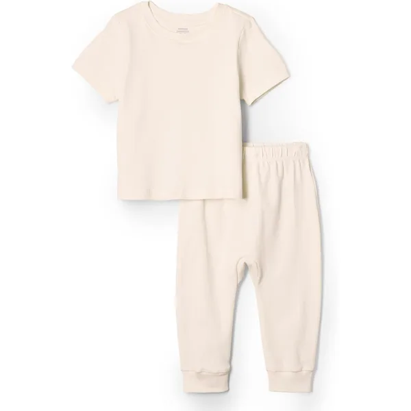
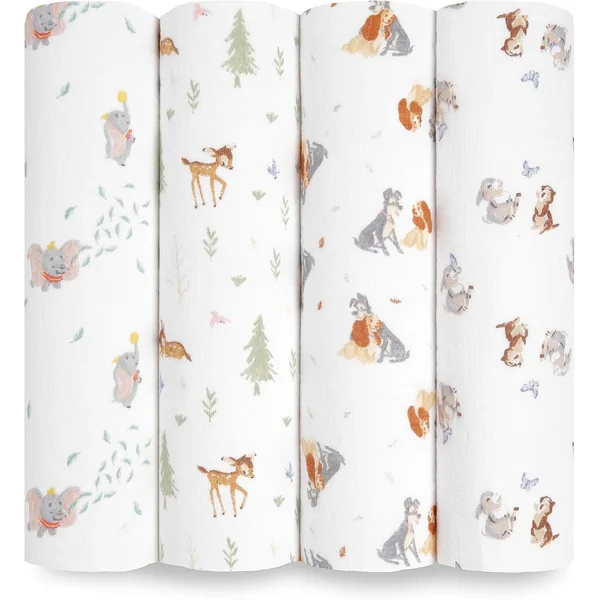
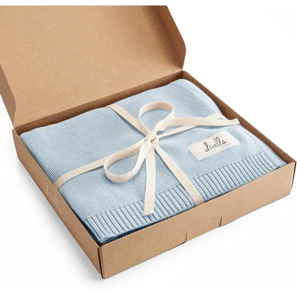

"Orgânico" está em todas as etiquetas de roupa de bebé — mas nem todas as etiquetas dizem a mesma coisa. Algumas significam algodão cultivado sem pesticidas e processado sem químicos tóxicos; outras significam apenas que o tecido final foi testado. Neste guia explicamos a diferença, comparamos as marcas mais procuradas em Portugal e dizemos-te, com franqueza, onde vale a pena gastar mais e onde não vale.
Porquê Escolher Algodão Orgânico para um Bebé?
A pele de um recém-nascido é significativamente mais fina do que a de um adulto e a sua barreira protetora ainda está em desenvolvimento nos primeiros meses. Isto torna-a mais permeável e mais reativa a resíduos químicos — corantes azoicos, formaldeído usado como anti-rugas, amaciadores industriais e restos de pesticidas.
O algodão convencional é uma das culturas mais tratadas com pesticidas do mundo, e o processamento têxtil que se segue envolve dezenas de substâncias auxiliares. O algodão orgânico certificado controla as duas pontas: como a fibra é cultivada e o que pode ser usado para a transformar em tecido.
Há ainda uma vantagem prática que os pais notam mais depressa do que a "química": as fibras orgânicas são geralmente colhidas com menos agressão mecânica, o que costuma traduzir-se em tecido que amacia com as lavagens em vez de ganhar borbotos.
GOTS vs OEKO-TEX — Não São a Mesma Coisa
Esta é a confusão mais comum, e é a que mais custa dinheiro aos pais. As duas certificações respondem a perguntas diferentes:
GOTS
Global Organic Textile Standard. Exige que a fibra seja organicamente cultivada (mínimo 95% para o selo "orgânico") e restringe os químicos usados em todo o processamento. Inclui também critérios sociais e ambientais na produção. É a certificação mais exigente.
A mais completaOEKO-TEX Standard 100
Testa o produto final quanto a substâncias nocivas, com limites mais apertados para artigos de bebé (Classe I). Não diz nada sobre como o algodão foi cultivado. Uma peça pode ser OEKO-TEX e ser algodão convencional.
~ Segurança, não origemOCS 100 / OCS Blended
Organic Content Standard. Verifica a percentagem de fibra orgânica e a cadeia de custódia, mas não regula os químicos do processamento como o GOTS. Um meio-termo credível.
~ Só a fibra"Eco" / "Bio" sem selo
Termo comercial sem verificação independente. Não te dá qualquer garantia sobre pesticidas, corantes ou acabamentos. Ignora na decisão de compra.
Sem valorTabela Comparativa das Marcas
Comparámos as marcas que mais aparecem nas seleções de enxoval em Portugal. O preço está indicado de forma relativa, porque os valores mudam com promoções e tamanhos:
| Marca | Certificação indicada | Preço | Ponto forte | Melhor para |
|---|---|---|---|---|
| Pré Natal | GOTS | €€ | Certificação exigente a preço acessível | Bodies do dia a dia |
| Burt's Bees Baby | GOTS | €€€ | Toque macio, mantém-se bem | Pijamas |
| LuaCoco | Algodão orgânico | €€€ | Fecho magnético — rápido de noite | Pijamas dos primeiros meses |
| Bramble & Bear | Algodão orgânico | €€ | Multipacks com bom custo por peça | Repor stock de pijamas |
| Amazon Essentials | Linha orgânica | € | O mais barato com fibra orgânica | Conjuntos de crescimento rápido |
| aden + anais | Algodão orgânico | €€€ | Musselina que amacia a cada lavagem | Fraldas de pano multiusos |
| Livella | Algodão orgânico | €€ | Tricot elástico e bonito | Mantas e presentes |
As Marcas, Uma a Uma

Pack 5 Bodies Orgânicos Manga Curta e Longa
É difícil bater isto: certificação GOTS num pack de cinco peças, o que baixa muito o custo por body. Cores neutras que aguentam bem as lavagens frequentes dos primeiros meses e sem corantes agressivos. Se só fores comprar uma coisa orgânica para o enxoval, que seja este pack — os bodies são a peça que passa mais horas em contacto direto com a pele.
Ver na Amazon
Pijama Algodão Orgânico com Fecho
A marca que muitos pais apontam como referência em algodão orgânico certificado GOTS. O tecido é notoriamente macio logo à primeira lavagem e não fica áspero com o tempo. É mais caro do que a média — mas num pijama, que o bebé usa 10 a 12 horas por dia, o custo por hora de uso é na verdade dos mais baixos do enxoval.
Ver na Amazon
Pijama Algodão Orgânico com Fecho Magnético
100% algodão orgânico com um detalhe que muda a vida: o fecho magnético com ímanes encapsulados. Abre e fecha em segundos, sem procurar molas às escuras. Nas mudas de fralda das 3 da manhã, isto é a diferença entre o bebé voltar a adormecer ou acordar de vez. Vale sobretudo nos primeiros quatro meses, quando as mudas noturnas são diárias.
Ver na Amazon
Pijama para Bebé em Algodão Orgânico — Multipack
A escolha sensata para quem precisa de quantidade sem abdicar de fibra orgânica. Sendo multipack, o custo por pijama fica bastante abaixo das marcas premium, e o algodão é suave o suficiente para uso diurno e noturno. Boa opção para o segundo e terceiro tamanhos, quando já sabes o ritmo a que o teu bebé cresce.
Ver na Amazon
Conjunto 2 Peças Algodão Orgânico Unissexo
A entrada mais barata no algodão orgânico. Não tem o acabamento das marcas premium, mas cumpre — e para tamanhos que o bebé vai usar seis semanas antes de rebentar as costuras a crescer, essa é muitas vezes a decisão certa. Cores neutras e unissexo, o que ajuda se planeias reutilizar num segundo filho.
Ver na Amazon
Pack 4 Fraldas de Musselina Algodão Orgânico
A musselina orgânica desta marca é o exemplo perfeito de tecido que melhora com o uso: sai da embalagem já agradável e fica mais macia a cada lavagem. Servem como manta leve, babete grande, protetor de ombro, resguardo do carrinho e cobertura discreta para amamentar. Caras à peça, mas das poucas coisas do enxoval que continuam em uso ao fim de dois anos.
Ver na Amazon
Manta de Tricot Algodão Orgânico 90×70cm
Tricot em algodão orgânico, suave e com boa elasticidade. É o tipo de peça que funciona em duas frentes: usa-se mesmo no dia a dia (carrinho, sesta, berço) e tem apresentação suficiente para ser oferecida. Se procuras um presente de nascimento que não vá parar ao fundo do armário, esta categoria é das mais seguras.
Ver na AmazonE as Marcas que Não São Orgânicas — São Más?
Não. E vale a pena dizê-lo com clareza, porque há muita culpa desnecessária à volta deste tema. Uma peça de algodão convencional com certificação OEKO-TEX Classe I foi testada precisamente para o uso que lhe vais dar: contacto com a pele de um bebé. É segura.
A diferença entre orgânico e OEKO-TEX é sobretudo ambiental e de processo — não é a diferença entre "seguro" e "perigoso". Marcas como Simple Joys by Carter's, Chicco ou Gerber vendem packs de algodão convencional que muitos pais usam sem qualquer problema, a um terço do preço.

Pack Bodies Manga Curta e Longa + Calças
O clássico dos packs de bodies: algodão convencional, muito bom custo por peça e um fecho entre as pernas que abre com uma mão. Não é orgânico — mas é honesto sobre isso e resolve o problema de ter roupa suficiente sem esvaziar o orçamento. Muitos pais combinam: bodies destes para o dia, orgânicos para dormir.
Ver na AmazonVale a Pena o Preço Extra? A Nossa Resposta Honesta
Depende inteiramente da peça. A pergunta útil não é "orgânico ou não?" mas sim "quantas horas por dia é que esta peça toca na pele do meu bebé?". É isso que determina se o custo extra faz sentido:
Compensa investir
- Bodies — a camada que está sempre em contacto direto
- Pijamas — 10 a 12 horas de uso por dia
- Sacos de dormir — usados todas as noites durante meses
- Musselinas — vão à cara, à boca e às mãos
- Roupa para bebés com eczema ou pele reativa
Não compensa
- Roupa de cerimónia usada 2 ou 3 vezes
- Casacos e camadas exteriores (não tocam a pele)
- Tamanho RN, que muitos bebés nem chegam a usar
- Peças decorativas e acessórios de fotografia
- Roupa que já recebeste em segunda mão e está boa
Como Lavar para a Roupa Orgânica Durar
Pagar mais por algodão orgânico e depois destruí-lo na máquina é o erro mais frequente. Estas regras aplicam-se a praticamente toda a roupa de bebé:
- Lava tudo antes do primeiro uso: remove resíduos de armazenamento e transporte, mesmo em peças certificadas.
- Detergente sem perfume nem branqueadores óticos: os branqueadores agarram-se à fibra e ficam em contacto com a pele. Um detergente neutro específico para bebé resolve.
- Nada de amaciador: reveste as fibras com uma película que reduz a absorção — precisamente o oposto do que queres num body ou numa musselina.
- 30 °C é suficiente: temperaturas altas encolhem o algodão e desgastam os elásticos. Reserva os 60 °C para acidentes com fraldas.
- Evita o secador ou usa o programa mais suave: é a principal causa de encolhimento e de bodies que deixam de fechar.
- Seca à sombra: o sol direto desbota os tons naturais, sobretudo nos não tingidos.
O Nosso Veredicto
Se tivéssemos de escolher uma única marca para recomendar a quem está a montar o enxoval de raiz, seria a Pré Natal: é a que oferece a certificação mais exigente (GOTS) no formato que mais interessa — um pack de bodies, que é a peça de maior contacto e maior rotação. É onde o dinheiro extra faz mais diferença por euro gasto.
Para pijamas, a Burt's Bees Baby justifica o preço pelo toque e pela durabilidade, e a LuaCoco vale a pena se as mudas noturnas estiverem a dar cabo de ti. Se o orçamento estiver apertado, a linha orgânica da Amazon Essentials dá-te fibra orgânica pelo preço de algodão convencional — e isso é melhor do que não ter nenhuma.
E se acabares por comprar convencional certificado porque as contas não davam: está tudo bem. Um bebé vestido com algodão OEKO-TEX testado, com pais descansados por não terem estourado o orçamento, está perfeitamente bem cuidado.